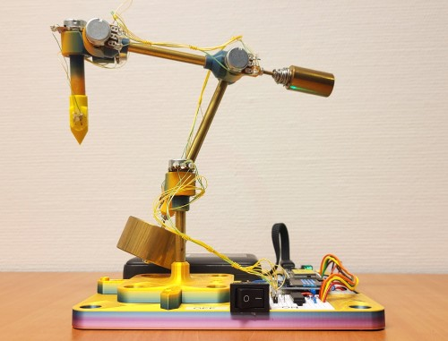

HandTool
Handheld 6-DoF input device: six potentiometers, a drag button in the tip, an ESP32-C5.
Connecting...
Live
x-
y-
z-
Drag button-
Battery-
Samples/s-
Zero calibration
The joint angles are measured from a zero pose: all joints at 0 degrees, as in the 3D view with every slider at 0. If the 3D view doesn't match the tool, put the tool in that pose and press Set zero here. It is saved on the device. Factory zero goes back to the values of the original firmware.
Serial output (USB)
Frequency Hz
HTTP endpoints
- /robotView.html 3D view (moves with the tool; sliders when it isn't connected)
- /allData all data as JSON: raw and filtered ADC values, joint angles, end-effector matrix, battery
- /angles joint angles in degrees, drag button
- /rawAdcValues, /filteredAdcValues ADC readings
- /fk end-effector to base transformation (4x4, metres)
- /dhParams Denavit-Hartenberg parameters
ws://<address>/wsWebSocket: /allData 50 times a second (send any message to start)- /api/state firmware, sensors, Wi-Fi, calibration
POST /api/zero(?reset=1),GET/POST /api/calibrationzero calibration/serialAngles?enable=1,/serialFK?enable=1,/serialFrequency?hz=10serial output